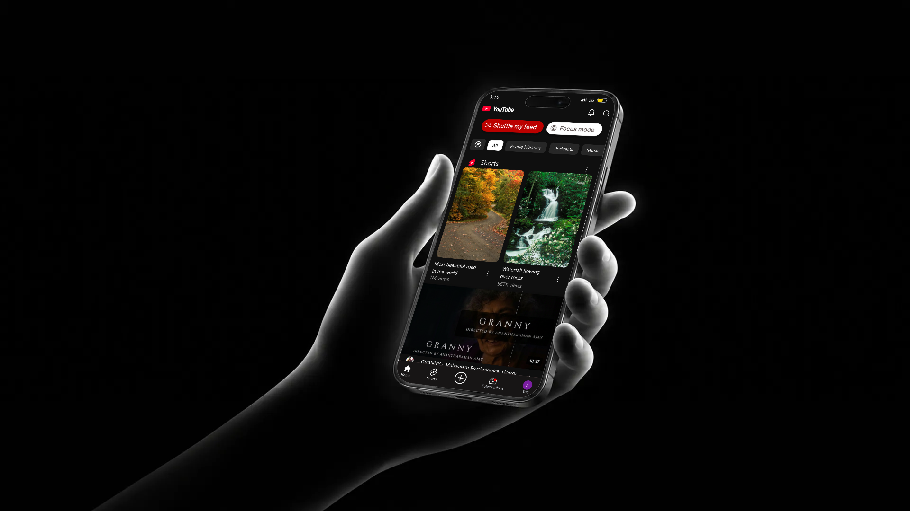
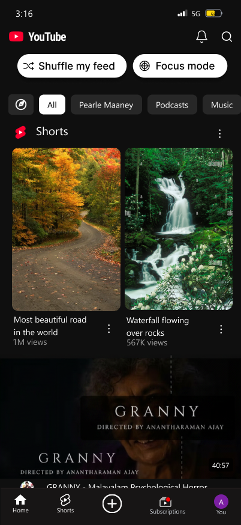
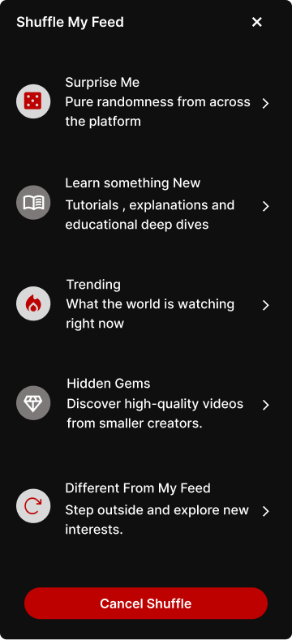
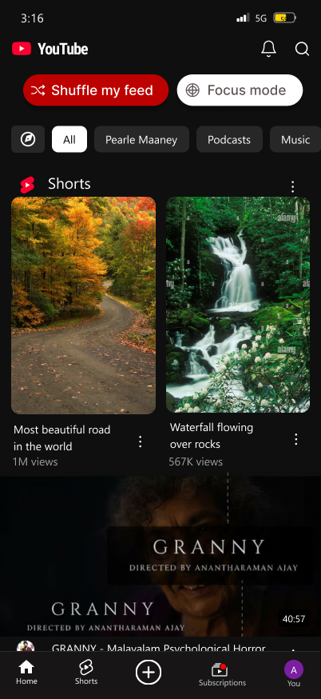
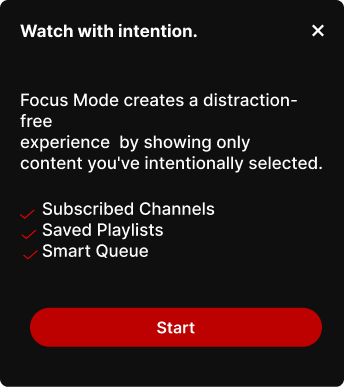
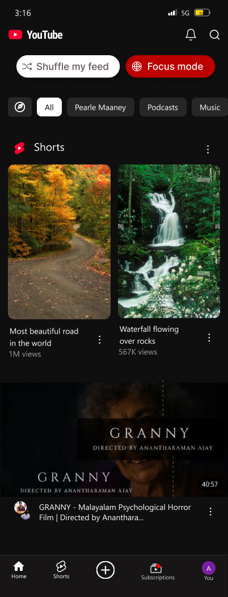
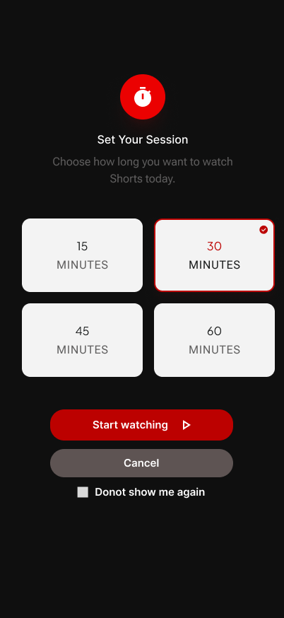
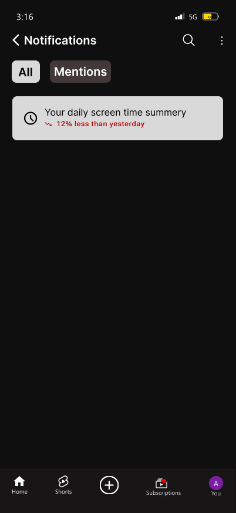
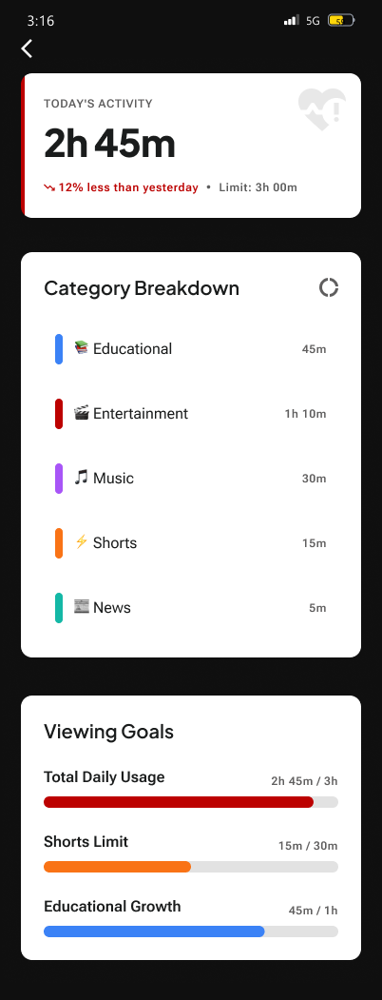
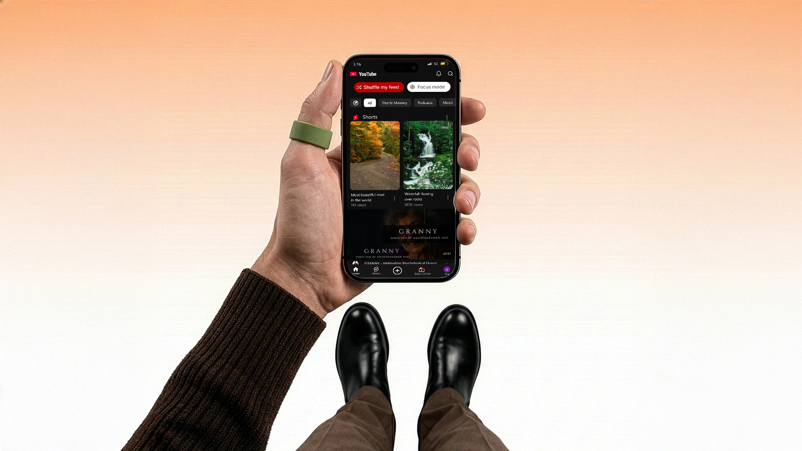

A purpose gets sidetracked.
Most participants arrived to learn, follow creators, or listen, yet many drifted into unrelated videos.
Giving users more control without losing the joy of discovery.
A UX exploration of intentional viewing, meaningful discovery, and the little moments where people lose control of their time.

A tutorial. A podcast. A creator we love. YouTube fits into everyday life as a place to learn, listen, and explore.
I wanted to understand what happens between arriving with a purpose and drifting into an unplanned viewing session. The opportunity was to preserve discovery while giving people more say in their experience.
“I open YouTube to learn one thing and somehow end up watching random videos.”Participant quote from user interviews
I conducted user interviews and a competitive analysis to explore viewing intentions, repetitive recommendations, distractions, discovery, and awareness of time spent watching.
Participants included students, working professionals, content creators, and casual viewers. These qualitative findings describe this interview group, rather than all YouTube users.
Most participants arrived to learn, follow creators, or listen, yet many drifted into unrelated videos.
Similar recommendations made it harder to discover different topics without resetting preferences.
Recommendations, Shorts, and autoplay distracted participants from the video they came to watch.
Nearly every participant described watching longer than intended. Several preferred gentle reminders to strict limits.
Cooking, commuting, and exercising created a need for a lightweight, temporary viewing queue.
Helpful replies, creator responses, and timestamped discussions were difficult to find.
“Once I watch one productivity video, my feed becomes only productivity videos.”Participant quote from user interviews
The competitive analysis provided inspiration for the concept, rather than a live audit of current platform features.
| Reference | Pattern explored | Opportunity |
|---|---|---|
| Spotify | Queues and personalized discovery | Make one-time listening and viewing sessions easier. |
| Netflix | Continue Watching and category organization | Support discovery with clearer paths and controls. |
| Activity awareness and time reminders | Help people notice how long they have been scrolling. |
I explored ideas across content discovery, the viewing experience, and digital wellbeing. I considered user value, potential impact, and whether each idea could fit into familiar workflows.
| Problem | Ideas explored | Selected direction |
|---|---|---|
| Repetitive recommendations | Shuffle, Explore mode, interest reset | Recommendation Shuffle |
| Competing distractions | Focus Mode, hide Shorts, minimal mode | Focus Mode |
| Unnoticed scrolling time | Reminders, daily limits, weekly reports | Shorts Time Reminder |
| One-time viewing sessions | Smart Queue, temporary playlists | Smart Queue |
| Hard-to-find discussions | Filters, AI summaries, creator-only replies | Comment filters |
| Low usage awareness | Dashboard, viewing insights | Screen Time Dashboard |
Choose what to explore and when to focus.
Keep a session moving and find useful information.
Make time visible while keeping the decision with the viewer.
These proposed features support one design vision: help viewers discover, stay focused, and reflect on their habits. Their effects still need to be tested.
When the feed feels repetitive, offer a way to explore a different mix of content without a full interest reset.



When a viewer has a purpose, narrow the experience to subscriptions, playlists, and their queue.


Iteration to resolve: this screen still shows Shorts and recommendations with Focus selected. The next version needs to reflect the intended subscriptions, playlists, and queue-only experience.
Introduce a moment to pause and decide. A gentle reminder supports awareness while allowing the viewer to continue.

The entry screen makes duration a conscious choice. Start watching and Cancel give the viewer a clear next step.
This screen shows session setup. The end-of-session reminder remains part of the proposed flow.
Build a temporary session for cooking, commuting, or exercising without creating a permanent playlist.
Use filters to make creator replies, helpful answers, and timestamped discussions easier to locate.
Bring viewing patterns into view with a category breakdown, giving people a starting point for reflection.


The times and “12% less than yesterday” shown in the interface are sample design data, not measured project outcomes.
The visual direction preserves YouTube’s familiar dark interface while using red to emphasize selected modes, primary actions, and viewing awareness. Discovery, focus, and time management become visible choices within the viewing experience.

I shared the redesign with friends to hear their initial reactions. Their feedback indicated a preference for this concept over the existing YouTube experience.
This summarizes the feedback received; it is not a verbatim participant quote.
The positive response gave me encouragement to develop the concept further. The next step is to understand what drives that preference and whether the new controls are easy to use in practice.
This was an informal review of the design. Preference is an early signal; task completion, ease of use, and changes in viewing habits still need to be evaluated.
A task-based usability study would explore the following questions:
| Proposed task | What I would observe |
|---|---|
| Find a topic outside your usual recommendations. | Can viewers discover Shuffle and choose a mode that matches their intention? |
| Start a session focused on content you have chosen. | Can viewers find Focus Mode and explain what they expect it to show? |
| Set a 30-minute Shorts session. | Is the duration selection clear, and do viewers understand the next step? |
| Find your most-watched category and check a viewing goal. | Can viewers interpret the dashboard without guidance? |
For the next iteration, I would record task completion, moments of hesitation, and participants’ explanations, then use those observations to refine the design. Smart Queue and comment navigation remain proposed flows.